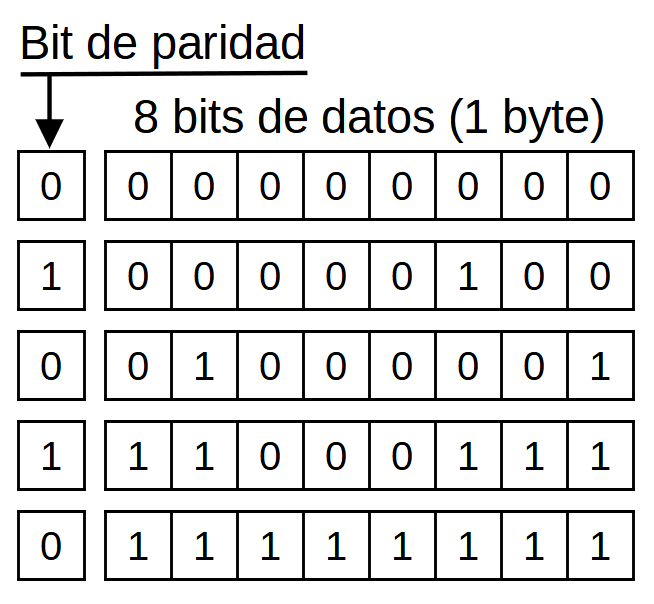

2. Detecció d'errors¶
A l’electrònica digital podeu afegir dades addicionals a la informació enviada per un canal amb soroll, per detectar si la transmissió d’informació ha estat correcta o si s’ha produït algun error.
La "detecció d'errors <https://es.wikipedia.org/wiki/detecci%C3%B3n_y_correcci%C3%B3n_de_erores>` __ Afegiu una petita sobrecàrrega d'informació amb bits addicionals anomenats ** redundància **.
A la transmissió de dades en línia o a la xarxa de dades mòbils, si es produeix un error i es detecta, l’ordinador tornarà a demanar la informació fins que la versió correcta arribi sense errors.
Bits de paritat¶
El sistema més senzill per afegir redundància per detectar errors és el "bit de paritat <https://es.wikipedia.org/wiki/bit_de_parity>`__. Aquest bit té un valor que fa que el nombre de bits sigui un total de sempre.
Per exemple, si les dades enviades són de 3 bits a un, el bit de paritat també valdrà un de manera que el nombre total de bits a un sigui de 4 (número de parell).
A la figura següent podeu veure diversos exemples de bits de paritat correctes, enviats juntament amb el vostre byte d'informació.
{kind=link}

Bit de paritat per a diversos bytes de dades.¶
Si la paritat final és estranya, això vol dir que un dels bits d’informació ha canviat durant la seva transmissió i, per tant, s’ha produït un error.
Aquest sistema reconeix el canvi d’un sol bit d’informació. Si hi ha canvis en dos bits alhora, el sistema de control de paritat no podrà reconèixer l'error.
Suma de verificació¶
La "suma de verificació <https://es.wikipedia.org/wiki/suma_de_verifaci%C3%B3n>`__, també anomenada checksum, és un fet afegit a les dades d'informació que pretén detectar errors de transmissió amb una precisió més gran que un simple bit de paritat.
Hi ha diverses versions:
- Afegiu el valor de tots els bytes d'informació transmesa. És la versió més senzilla de la realització i la menys capaç de detectar errors.
- Codis de redundància cíclica o CRC <https://es.wikipedia.org/wiki/verificaci%C3%B3n_de_redundancia_c%C3%Adclica> __. Són codis que solen tenir una longitud de 16 o 32 bits i que són capaços de detectar més errors que una suma senzilla. Com a contrapartida, el seu càlcul és més complex.
- Funcions de hash avançades, com ara el sha. Són codis que solen tenir una longitud de més de 128 bits (16 bytes) i molt car de calcular. D'altra banda, són els més potents i serveixen per detectar errors aleatoris i també errors introduïts per una ciberdelinqüència.
Aquestes sumes de verificació s’utilitzen àmpliament en línies de comunicació remotes i suports digitals com CD-ROM o Memories USB.
Exercicis¶
Per a què serveix els errors?
Quina és la informació addicional afegida per detectar errors de transmissió de dades?
De les dades següents rebudes, quines tenen errors i per què?
Escriviu el bit de paritat corresponent als següents números binaris
0 1 0 1 0 1 0 1 1 1 1 1 0 0 0 1 1 0 0 1 0 0 0 1 0 0 0 1 1 0 0 0
Què és un codi de comprovació?
Enumereu tres tipus diferents de comprovació.
Escriviu dos exemples de sistemes que utilitzen els codis anteriors.
{kind=link}